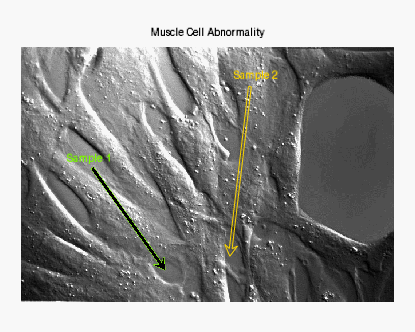

The ARROW function draws an arrow between the two points x1, y1 and x2, y2.
The following lines create the plot shown at the top of this topic.
im = IMAGE(FILEPATH('muscle.jpg', $
SUBDIRECTORY=['examples','data']), $
TITLE='Muscle Cell Abnormality')
arrow1 = ARROW([125,252], [233,55], /DATA, ARROW_STYLE=1, $
COLOR=!COLOR.CHARTREUSE, THICK=3)
arrow2 = ARROW([400,365], [375,79], /DATA, ARROW_STYLE=1, $
COLOR=!COLOR.GOLD, THICK=3, FILL_BACKGROUND=0)
t1 = TEXT(81,242,'Sample 1', /DATA, TARGET=im, $
COLOR=!COLOR.CHARTREUSE)
t2 = TEXT(372,387,'Sample 2', /DATA, TARGET=im, $
COLOR=!COLOR.GOLD)
See Annotations Examples for additional examples using the ARROW function.
graphic = ARROW(X, Y )
The ARROW function returns a reference to the created annotation. Use the returned reference to manipulate the annotation after creation by changing properties or by calling methods.
A two-element vector [xstart, xend] containing the x-coordinates for the arrow. By default, the coordinates are in normalized units (between 0 and 1).
A two-element vector [ystart, yend] containing the y-coordinates for the arrow. By default, the coordinates are in normalized units (between 0 and 1).
Properties marked as (Init) are applied only during the initial creation of the graphic. All other properties can be set during creation, or retrieved or changed after creation.
By default, anti-aliasing is used when drawing lines. Set this property to 0 to disable anti-aliasing.
Set this property to an integer specifying the style or arrow used. The valid values are:
|
Value |
Arrow Style |
|---|---|
|
1 |
-------> (default) |
|
2 |
<------- |
|
3 |
<------> |
|
4 |
>------> |
|
5 |
<------< |
If you pass an invalid value, the ARROW_STYLE is set to 1 (the default value).
Set this property to a string or RGB vector specifying the arrow color. The default value is "black".
Set this property to 1 if the input arguments are specified in data coordinates. Setting this property inserts the arrow into the data space. Otherwise, the arrow is added to the annotation layer.
Note: If the arrow head extends beyond the data range, the arrow will not be drawn. For double-headed arrows, if either arrow head extends beyond the data range, the arrow will not be drawn.
Set this property if the x and y coordinates are specified in device coordinates (pixels).
Set this property to 1 to fill the arrow (the default behavior). A value of 0 draws the arrow as an outline.
Set this property to a string or RGB vector specifying the arrow fill color. The default value is "black".
Set this property to an integer between 0 and 100 that specifies the percent transparency of the arrow interior.
The default value is the same as the TRANSPARENCY property value.
Set this property to a floating-point value between 0 and 90 that specifies the angle (in degrees) between the arrowhead and the shaft. The default value is 30.
Set this property to a floating-point value between -1 and 1 that specifies the indentation of the back of the arrowhead along the shaft.
A value of 0 gives a triangular shape. A value of 1 draws an arrowhead composed of two lines. A value of -1 creates a diamond-shaped arrowhead. The default value is 0.4.
Set this property to a floating-point factor used to scale arrow heads and feathers. The default value is 1.
Set this property to 1 to hide the arrow. A value of 0 reveals the arrow (the default behavior).
Set this property to a value between 1 and 10 specifying the thickness of the arrow outline. The default value is 1.
Set this property to a string that specifies the name of the graphic. The name can be used to retrieve the graphic using the bracket array notation. If NAME is not set, IDL assigns a name based on the graphic type.
Set this property to 1 if the input arguments are specified in normalized (0, 1) coordinates (this is the default behavior).
If points are specified in data coordinates, set this property to the graphic object in which to insert the arrow. By default, the current graphic is used.
Set this property to a floating-point value between 0 and 10 that specifies the thickness of the arrow shaft. The default value is 1.
Set this property to an integer between 0 and 100 that specifies the percent transparency of the arrow. The default value is 0.
Set this property to an IDL variable of any data type.
This property retrieves a reference to the WINDOW object which contains the graphic.
| 8.0.1 | Introduced |
| 8.1 |
Added the following properties: UVALUE. The THICK property was changed to accept a value between 0 and 10. Added the following methods: Delete, GetData, SetData. |